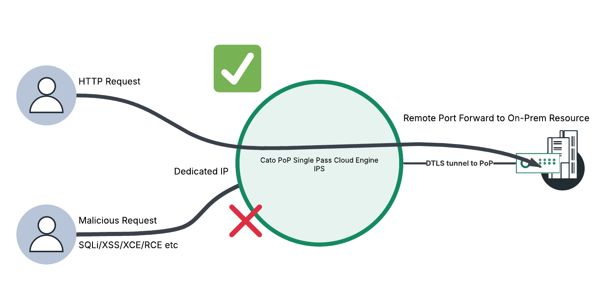
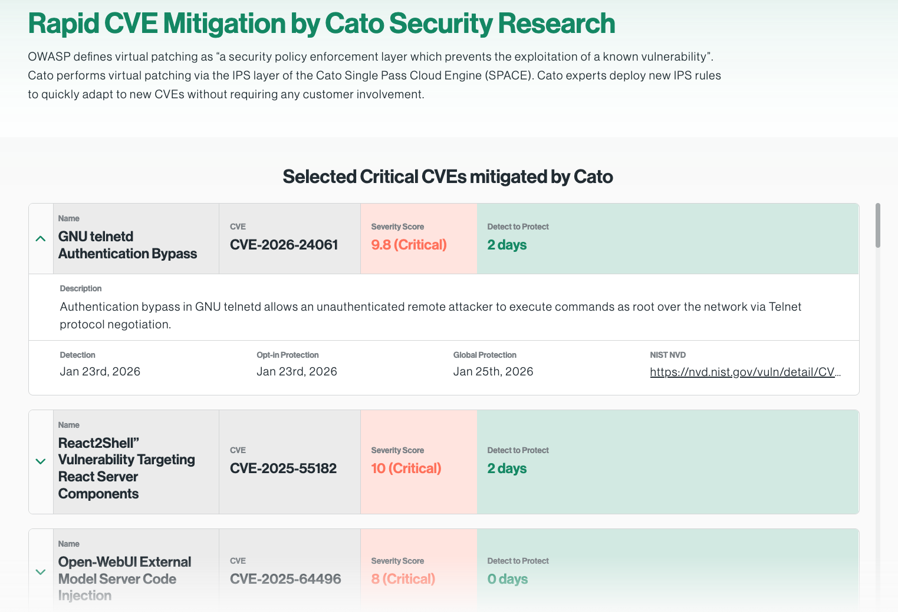

Why this matters
Most organisations still have services that must face the internet from on-premise infrastructure — and every one of them is a target for automated scanning and exploitation from the moment it goes live. The traditional answer is a stack of appliances at the edge: firewalls, WAFs, reverse proxies — each with its own patch cycle, its own downtime window, and its own line in the audit report.
Increasingly the driver is not just security, it is compliance. The frameworks customers are measured against all demand demonstrable controls over public-facing services:
ISO 27001
A standard to establish, implement and maintain information security — including controls over externally exposed systems and their patching.
NIS2
The EU framework for protecting critical infrastructure — ensuring security and resilience, and preventing, deterring and mitigating major incidents.
SOC 2
Auditing of controls on security, availability, confidentiality and privacy — with evidence the auditor can actually inspect.
Public-facing services vs. the audit
Four questions come up in almost every conversation about published services:
Public facing
“How can I protect against attackers whilst ensuring services are running?”
Audit evidence
“How do I check I have controls in place — and show the auditor proof?”
Virtual patching
“Services need to stay active; I can’t afford downtime to patch.”
Governance
“How do I ensure I keep to compliance requirements as services and threats change?”
- Reputational impact — lowering share value
- Industry regulatory requirements — financial fines
- Not able to sign new customers; the business unable to grow at the desired pace
- Not able to insure the business against cyber attacks
“Which services do you publish to the internet today — and when the next critical CVE lands on one of them, how long are you exposed before you can take it down to patch?”
Inbound IPS, by the numbers
Cato’s IPS runs inside the Single Pass Cloud Engine (SPACE) at every PoP, with signatures written and deployed by Cato Security Research — no customer change windows, no appliance firmware. The signature set is heavily weighted towards exactly the traffic a published service receives:
Coverage spans CVEs from 1999 through 2026, with strong recent growth — nearly every CVE Cato writes a signature for protects inbound-facing services, keeping published services up and protected.
Publish the service, not the server
Remote Port Forwarding gives you an allocated IP at a Cato PoP of your choosing — that IP, not your site, is what the world sees. Inbound connections terminate at the PoP, where the SPACE engine and inbound IPS inspect and scrub every request. Flexible access controls filter inbound sources, and only clean traffic is forwarded down the socket’s existing DTLS tunnel to the on-prem resource. No inbound firewall holes, no DMZ, no infrastructure or network topology changes — and no appliances to deploy on site.

A secure way to publish services
Businesses can safely allow connections into the organisation — the allocated IP at the PoP fronts the service, so the site itself stays dark.
Scrubbed before it arrives
The SPACE engine inspects and secures every inbound flow — SQLi, XSS, XXE, RCE, path traversal and command injection are dropped at the PoP edge.
Flexible access controls
Inbound source filtering restricts who can even reach the published port — by source IP or country — before deeper inspection begins.
Evidence for the auditor
Every allowed and blocked inbound request is an attributed event — the demonstrable control ISO 27001, NIS2 and SOC 2 all ask for.
Rapid CVE mitigation — protected before you patch
When a critical CVE lands on a service you publish, the race is between the exploit kits and your next maintenance window. Cato performs virtual patching in the IPS layer of SPACE: Cato Security Research writes the signature and deploys it to every PoP worldwide, without customer involvement and without touching the vulnerable service. The service stays up; the exploit path is closed.

Show the live page in the meeting — it is public, updated as new CVEs are mitigated, and a strong proof point that this is an operating practice, not a datasheet claim.
How to run the demo
Ask what they publish today and how it is protected — a DMZ and a WAF appliance? A cloud load balancer? Nothing but a port forward on the firewall? Anchor the demo to the service they name and the framework they are audited against.
-
Configure an allocated IP at a PoP of your choosing
Allocate an IP at the PoP nearest the audience — for a UK audience, the London PoP. This static IP becomes the public address of the published service; nothing else about the site is reachable from the internet.
-
Create the Remote Port Forwarding rule
Forward HTTP/HTTPS from the allocated IP to a lab web resource — an Azure or AWS tenancy attached to your lab works well (e.g. a web server behind an AWS vSocket site (eu-west-2) or the Azure vSocket hub). Show the inbound source filtering options while you are there: restrict by source IP or country if the service is only for known partners.
-
Verify inbound IPS is turned on
Security → IPS
Confirm IPS is enabled and protecting inbound traffic. Make the point that the signatures are maintained and deployed by Cato Security Research — there is nothing here for the customer to patch or update.
-
Prove the legitimate path
From an outside connection (phone hotspot works), browse to the allocated IP and show the published service loading normally — the green lane on the diagram.
-
Show live protection
Monitor → Events
Review IPS events against the allocated IP — internet-facing IPs collect real scanner traffic quickly. Or trigger the IPS deliberately with a known CVE that Cato has a signature for, and watch the block appear as a fully attributed event.
-
Close on virtual patching
Open the Rapid CVE Mitigation page and land the message: “When the next critical CVE hits this service, Cato closes the exploit path at every PoP in 0–2 days — no downtime, no change on your side.”